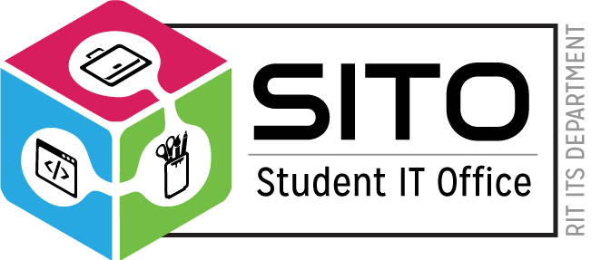
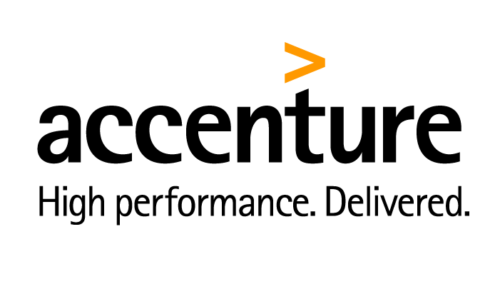

ROLES AND RESPONSIBILITY:
- Responsibilities include providing support to the systems administrators
- Troubleshooting systems and printer problems
- Assisting assisting over 1000 users including faculty members and students with issues related to over 250 machines including OS X
- Linux and Windows machines, servers and accounts for the whole CS Department.
ELECTRONICS SOFTWARE DEVELOPER & TESTER, ANSYS, PA– JANUARY 2020 TO APRIL 2020

- Develop, test, and implement projects in accordance with established Ansys standards
- Work with other teams of EBU to create support and ongoing maintenance plans
- Build tools that automate software development/testing infrastructure processes.
- Advance software robustness by testing and verifying defect fixes
- Conduct interactive and automated testing of user interfaces and simulation results.
- Learn and employ the best software practices including design and code review.
- Programming Language: Python, C++, JavaScript
- Web Development: HTML, CSS, jQuery, Bootstrap, Python-Flask, Jinja, WSGI
- Database: mongo DB
- Operating System: Linux, Windows
- Repository: Git, Git Extension
- Automation Tool: Jenkins, Microsoft TFS, PyTest
- IDE: Microsoft visual studio-2017, PyCharm
WEB DEVELOPER, SITO,ROCHESTER INSTITUTE OF TECHNOLOGY,
AUGUST 2019 TO DECEMBER 2019

- Understood customers business requirements for requested work effort
- Assessed design approaches to meet requirements and determine the most appropriate option per request
- Developed, tested, and implemented projects in accordance with established ITS standards
- Facilitated and/or participate in recurring meetings with customers and team members
- Planned and managed work activities to meet deadlines and multiple project goals.
- Assessed the strengths and weaknesses of alternative designs and technologies.
- Provided and received feedback to improve team productivity and effectiveness
- Worked with other areas of ITS to create support and ongoing maintenance plans
- Estimated work effort and document work plans
- Programming Language: Java, JavaScript, Spring MVC, Servlet
- Web Development: HTML, CSS, jQuery, AJAX, Bootstrap, TypeScript, RxJx, Angular 8
- Operating System: Mac-OS, Windows
- Repository: Git, JIRA
- Methodology:: Agile Model, SCRUM and KANBAN Board
APPLICATION DEVELOPMENT ANALYST, Accenture, MUMBAI, INDIA- AUGUST 2014 TO MAY 2018

- Creating packages and deploying packages and Integrations components from development environment to Test and Production environment.
- Provided technical solutions for integration scenarios.
- Worked on Change Requests, Development Requests and Defect fixing as per requirement.
- Expertise in developing the flow services, file poling, notifications and Triggers.
- Enhanced the existing processes, services and trigger to give optimal solutions.
- Expertise in creating adapters services and adapter notifications (JDBC).
- Debugging the issues related to pre-production.
- Helping IO team to solve Infrastructure related issues with respect to meeting the SLAs.
- Worked on Producer consumer web service using REST/ SOAP/POSTMAN API
- Programming Language: Java, JavaScript, webMethods, BPM, Advance Java, Spring
- Web Development: HTML/HTML5, CSS/CSS3, DHTML, XHTML, JSP
- Database: Pl-SQL, Oracle-11g
- Operating System: Windows, Unix, Linux
- Repository: SVN, JIRA
- Methodology:: Agile Model, SCRUM and KANBAN Board